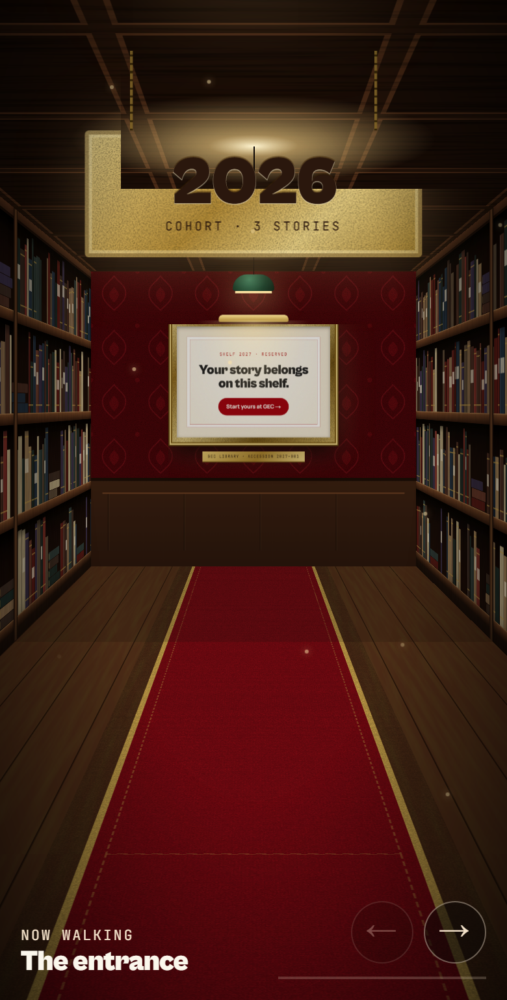

→ Open the clickable mobile flow (all routes, with shaders)
Every route, re-thought for a 360–430px phone. Desktop metaphors (the desk, the shelf aisle, the stage manager, the curtains) stay recognisable but stop being pinned scroll runways. Each section is tagged, then questions at the bottom of each route — answer them and we iterate v2.
Pinned scroll-scenes (FullViewportAct) fight iOS URL-bar resize and thumbs. Mobile gets normal flow + swipe rails.
Collections (campaigns, stories, speakers, teams) become snap rails. Reading content stays vertical.
Menu opens as a bottom sheet. Primary CTAs are full-width 48px. Newsletter bin becomes a bottom-right pill.
Brand entrance stays (once per session). Act curtains between sections become a simple act header. Shaders already off ≤768 — keep it.
≤767 = this doc. 768–1024 = desktop layout at 2-col. No third design.
Navbar, menu, footer, brand curtain, newsletter bin — things on every page.
Logo left, 40px menu button right. Hides on scroll-down, returns on scroll-up so content gets the full screen.
© GEC · Galgotias University
| Piece | Call | Mobile behaviour |
|---|---|---|
| Navbar | adapt | 52px bar, hide-on-scroll-down. Logo shrinks to emblem + wordmark only.Existing MOBILE_NAV_ROUTES reused. |
| Mobile menu | replace | Full-screen overlay → bottom sheet with big numbered links + one CTA. Swipe-down to close. |
| Brand entrance curtain | keep | Full sequence kept on mobile, re-framed for portrait. See strip below. |
| Curtain interstitials | drop | Replaced by a plain act header (kicker + title). No full-screen reveal between acts. |
| Shader layers | keep off | Already disabled ≤768. Surfaces use flat cream/sand + grain. |
| Newsletter bin | adapt | Floating bin → “Dispatch” pill bottom-right. Tap opens broadsheet reader as full-screen sheet. Hidden while menu open / near footer. |
| Footer | adapt | Link columns → accordion. Subscribe button full-width. |
| View transitions | keep | Fine on mobile; reduce to simple cross-fade. |
Same sequence as desktop, re-framed for a portrait screen: lockup scaled to ~70% of screen width and centred, then it flies into the smaller mobile top-bar slot and the curtain splits. Once per session; skip pill stays top-right.
| Detail | Call | Mobile behaviour |
|---|---|---|
| Logo lockup size | adapt | Scale by width (≈70vw), not height, so it never clips on narrow phones. |
| FLIP dock target | adapt | Target the 52px mobile bar logo; verify the rect is measured after the bar mounts. |
| Curtain split + seam | keep | Same 700ms top/bottom split. |
| Skip pill | adapt | Min 44px tap target, clear of the notch (env(safe-area-inset-top)). |
| Height | adapt | Use 100dvh so iOS URL bar doesn't shift the seam off-centre. |
10 sections today, three of them pinned acts (Desk, Shelf, Stage). Mobile keeps the order but flattens everything into one scroll with swipe rails. Scroll each phone.
Main Auditorium 01 · 10:00–18:00 · 480 seats
Pre-seed cohort
From dorm-room spark to institutional scale.

Real capture · existing library scene, kept as-is.
One detail card; chips switch it. Swipe card left/right = next team.
| Section | Call | Mobile behaviour |
|---|---|---|
| Hero billboard3 campaigns, click to switch | adapt | Headline + swipe rail of 3 campaign cards with dots. Two stacked CTAs. No auto-rotate. |
| Happening | adapt | Event + cohort cards stacked. Meta collapsed to one line. |
| Desk actDeskFolio desk | replace | Initiatives bookshelf: 4 volumes, one face-out, tap a spine to swap. No DeskFolio on mobile. (Already unpinned ≤768.) |
| Impact | adapt | 4 stats as 2×2 grid; count-up kept, triggered on view. |
| Milestones | adapt | Vertical timeline, left rail. |
| Shelf actstories library aisle | keep | Library scene stays on mobile — already has a phone mode (full-screen 100svh, manual walk with the → arrow). Fix: hide the Dispatch bin while the aisle is on screen; it covers the → arrow. |
| Speakers | adapt | Portrait card rail, peek of next card. |
| Stage actstage manager, 7 teams | replace | Unpinned. Sticky team chips + one detail card, swipe between teams. Keeps team colours as card top border. |
| Partners | adapt | GICRISE hero tile, then 3-col logo grid. |
| Final CTA | keep | Crimson block, full-width stacked buttons. |
No DeskFolio on phones. The desk becomes one wooden shelf holding the same four volumes (GEC_BOOKS): the selected book stands face-out, the others show spines. Tap a spine → it slides out face-out and the caption below swaps. “Open volume” goes to /initiatives#<id>. CSS + one piece of state, no desk physics.
Four volumes. Pick one.
From dorm-room spark to institutional scale.
Four volumes. Pick one.
People, arenas, and capital in productive collision.
Four volumes. Pick one.
Alumni ventures, syndicates, and portfolio records.
| Detail | Call | Mobile behaviour |
|---|---|---|
| DeskFolio / DeskFolioMobile | drop | Not rendered ≤767. Desktop desk untouched. |
| Books | keep data | Same 4 volumes + cover colours from gecBooksData; no new content. |
| Interaction | new | Spines are buttons (aria-pressed, full-height tap area). Swap = 250ms slide; reduced motion = instant. |
| Fit | adapt | 1 cover (136px) + 3 spines (34px) ≈ 260px — fits a 320px phone, no sideways scroll. |
Mostly editorial — the easiest route. Two-column blocks stack; timeline goes vertical; leadership becomes compact rows.
Route hero: title + 2-line lede only. Hero art below the fold or dropped.
Editorial paragraphs, 16px on device, max 4 before a break.
| Section | Call | Mobile behaviour |
|---|---|---|
| Route hero | adapt | Shared RouteHero: title + lede + optional CTA. Same pattern on all routes. |
| Origin + timeline | adapt | Text then vertical rt-timeline. |
| Mission / vision | adapt | Two stacked cards, mission accented. |
| Leadership grid | adapt | Compact rows (initials + role); bio expands inline. |
| Team architecture | adapt | Headline + link to /teams (don't duplicate the team UI here). |
Desktop = Stage Manager runway. Mobile = sticky team tabs + stacked detail for the active team. Deep link ?team= still selects the tab.
Pick a team. Swipe the card for the next one.
What the team does, in two or three sentences.
| Section | Call | Mobile behaviour |
|---|---|---|
| Route hero | adapt | Shortened. |
Stage runwayStageRunway | replace | New TeamTabsMobile reading the same teamsData. Sticky chip bar, one team visible, horizontal swipe changes team. |
| Hover states / card tilt | drop | No hover on touch; tap feedback only. |
| Final CTA | keep | Shared. |
Longest route (programmes, SDP flagship, schedule, application form). Mobile: programme cards stack, SDP schedule becomes a vertical list, form one column with a sticky apply bar.
Highlights in one line.
| Section | Call | Mobile behaviour |
|---|---|---|
Programmes (rt-offset) | adapt | Offset editorial layout → compact cards + filter chips. |
| DeskFoliodesktop desk UI | replace | Not on this route today; if added, reuse the Home initiatives bookshelf. |
SDP schedule (rt-schedule) | adapt | Grid → vertical timeline. |
| ProgramForm | adapt | 1 column, 46px inputs, correct inputmode/autocomplete, 16px font (no iOS zoom). |
| Apply pill | new | Floating “Apply” jumps to the form; replaces Dispatch pill on this route. |
Featured story, story list, portfolio grid, newsletter dispatch. Mobile leads with the featured story, then a scannable list; portfolio goes 2-col compact.
Two-line dek.
| Section | Call | Mobile behaviour |
|---|---|---|
| Featured story | adapt | Full-width image, title, dek, link. |
Story grid (brand-card) | adapt | Compact list rows (thumb + title + meta) — faster to scan than big cards. |
| Stories library aisle | keep | Lives on Home only (ShelfAct) — nothing to do on this route. |
| PortfolioGrid | adapt | Currently 1-col ≤640 → 2-col compact tiles. |
| Dispatch + DockedBin | adapt | Inline crimson block; docked bin hidden (pill covers it). Broadsheet opens full-screen. |
Once this doc is agreed, implementation order (each step shippable alone):
| Step | Work | |
|---|---|---|
| 1 · Shell | css+ | Top bar, bottom-sheet menu, footer accordion, Dispatch pill. Touches Navbar, SiteFooter, dispatch-bin. |
| 2 · Unpin acts | tsx | Acts already unpinned ≤768 via CSS. Fix the 0px-until-mounted jump; curtains → act header; desk → new InitiativeShelf on mobile. |
| 3 · Home rails | css | Hero rail, speakers rail, shelf spines, stats grid, timeline. Mostly CSS scroll-snap, no carousel lib. |
| 4 · Teams mobile | tsx | TeamTabsMobile for Home Stage act + /teams. |
| 5 · Routes | css | About, Initiatives, Stories per tables above. |
| 6 · Verify | qa | 360 / 390 / 430 widths, iOS Safari URL bar, no horizontal scroll, tap targets ≥44px, extend smoke.expect.mjs with a mobile pass. |